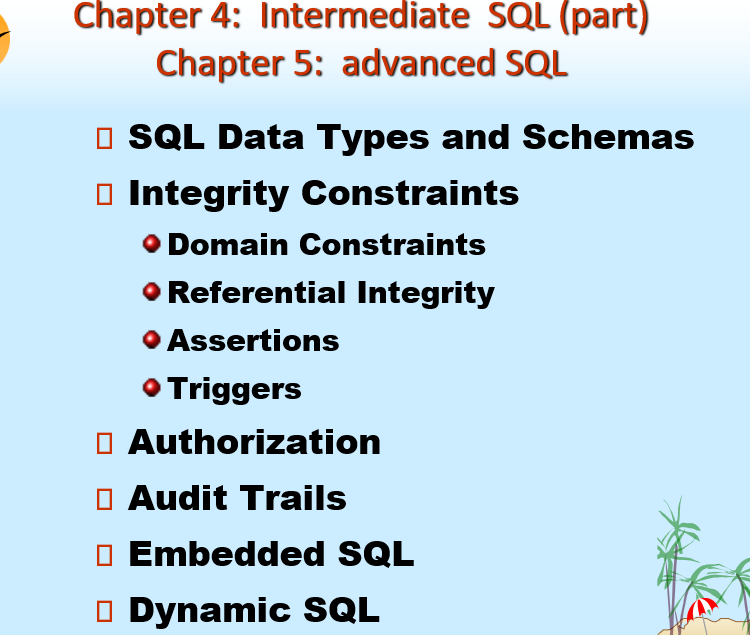
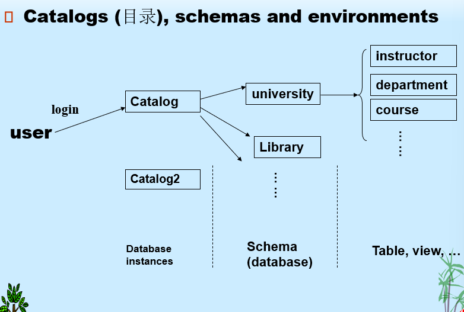
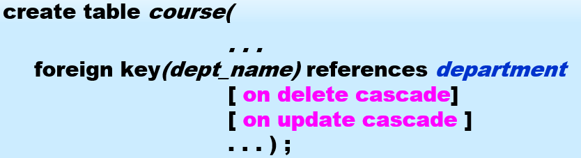
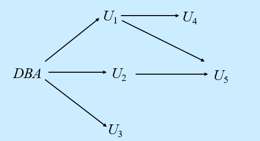
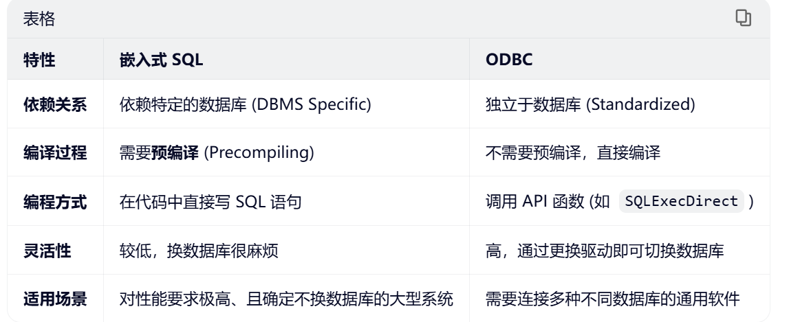
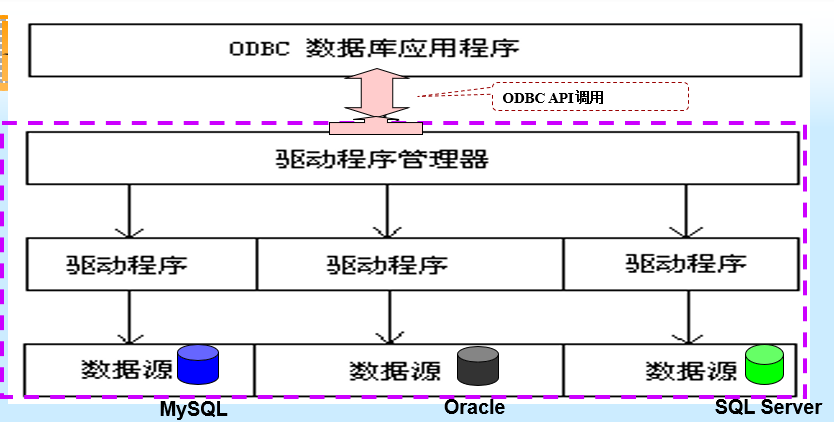
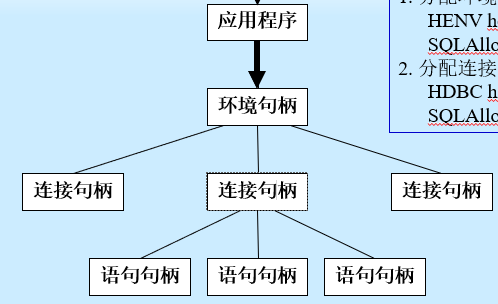

Chapter 4: Intermediate SQL

1. SQL Data Types and Schemas
-
Built-in Data Types in SQL SQL中的内置数据类型
-
User-Defined Types 用户自定义类型
create type Dollars as numeric(12,2);
-- 使用自定义类型
create table department
(dept_name varchar(20),
building varchar(15),
budget Dollars);
-- 创建新的domain
create domain Dollars as numeric(12,2) not null;
create domain Pounds as numeric(12,2);
-- 使用自定义的domain
CREATE TABLE instructor
(ID char(5) primary key,
name varchar(20),
dept_name varchar(20),
salary Dollars,
comm Pounds);
create type 和 create domain 的区别
- Domain 可以拥有约束, 例如:
not null, 并且可以为该域类型的变量定义默认值- 域不是强类型的, 而且只要底层类型兼容, 一种域类型的值就可以赋值给另一种域类型的值
- Large-Object Types 大对象类型: photos, videos, CAD files等作为大对象进行存储
- blob: 二进制大对象, 对象是大量未解释的二进制数据, 其解释权留给数据库系统之外的应用程序
- clob: 字符大对象, 对象是大量字符数据的集合
- 当查询返回大对象时, 返回的是一个指针, 而不是大对象本身
- Catalogs (目录), schemas and environments

2. Integrity Constraints 完整性约束
完整性约束 防止对数据库的意外损坏, 通过确保对数据库的授权更改, 不会导致数据一致性的丢失; 例如:
- instructor_name 不能为 null
- 任意两个instructor不能拥有相同的ID
包括 域完整性, 实体完整性(主键的约束), 参照完整性(外键的约束) 和 用户自定义的完整性约束
完整性约束 是 数据库实例 Instance 必须遵循的
完整性约束由 DBMS 维护
在单一关系上的约束:
- not null
- primary key
- unique
- check(P), 其中 P 是一个谓词
在SQL-92中, 允许使用check子句, 对domains进行限制:
CREATE DOMAIN hourly-wage numeric(5,2)
constraint value-test check(value >= 4.00);
-- 其中 value-test 作为约束自定义名称是可选的, 用于指示update违反了哪个constraint;
2.1 Referential Integrity 参照完整性约束
参照完整性 要求外键的值, 必须是其引用的主表中主键的合法值, 或者是NULL
若 \(r_1(R_1)\) 和 \(r_2(R_2)\) 分别为 主键是\(K_1\)与\(K_2\)的关系
参照完整性约束 也可以被叫做子集依赖性, 因为: $$ \Pi_\alpha(r_2) \subset \Pi_{K_1}(r_1) $$
数据库修改时, 关于参照完整性约束的检查:
- Insert: 插入是外键的值必须在被参照关系中存在
- Delete: 当在被参照关系中要删除一个元组, 若该被参照的属性值在参照关系中存在, 则:
- 拒绝删除请求, 并抛出一个错误
-
同时删除参照关系中的元组
-
Update:
- 若修改参照关系中的元组, 类似于Insert
- 若修改被参照关系中的元组, 类似于Delete
默认情况下, 外键引用被参照关系中的主键属性
- 被引用表中的引用列可以显示指定, 但是必须被声明为主键/候选键
SQL 中的级联操作 Cascading Actions

- 由于
on delete cascade子句的存在，如果删除 department 中的一个元组会导致参照完整性约束违规，那么该删除操作将“级联”到 course 关系，删除 course 中引用了被删除 department 的元组。 - 级联更新类似
如果存在一条跨越多个关系的外键依赖链，且每条依赖都指定了 on delete cascade（删除级联），那么在链的一端进行的删除或更新操作可以传播到整个链。
但是，如果级联更新或删除导致了约束违规（constraint violation），且该违规无法通过进一步的级联操作来处理，系统将中止该事务（aborts the transaction）。
- 结果是，由该事务及其级联操作引起的所有更改都会被撤销（undone）。
注意： 约束也可以被指定为可延迟的（deferrable），这意味着默认情况下它会立即被检查，但在需要时可以推迟检查。对于声明为可延迟的约束，指定约束的检查会被推迟到该事务结束之时。
- 也就是说： 只要后续步骤在事务结束前消除了违规，中间步骤是被允许违反参照完整性的。
- 否则， 创建某些数据库状态将会很困难，例如，插入两个外键相互指向对方的元组（记录）。
- 例如 关系中的配偶属性： marriedperson (name, address, spouse)
级联的替代方案:
on delete set nullon delete set default
2.2 Assertions 断言
断言 是一个 predicate , 表达了我们希望数据库始终满足的条件
- 用于多个关系上的复杂条件检查
CREATE ASSERTION <断言名称>
CHECK <谓词>;
当建立断言时，系统会在 每一次可能违反断言的更新操作 上测试其有效性。（当 谓词 为真时，操作通过；否则报告错误。）
这种测试可能会引入大量的 开销；因此应 非常谨慎地使用断言。
2.3 Triggers 触发器
触发器（Trigger） 是一条由系统自动执行的语句，它是作为对数据库进行修改的副作用而发生的。
要设计触发器机制，我们必须：
- 指定触发器执行的条件。
- 指定触发器执行时采取的动作。
Triggering event: Insert, Delete, Update
- 对于Update的触发器, 可以限制具体属性
create trigger overdraft-trigger after update of balance on account
可以指明 before 与 after
- 可以引用更新前后的属性值:
- 将旧行引用为
orow - 新行引用为
nrow
语句级触发器(for each statement), 相较于行级触发器(for each row), 在处理更新大量行的SQL语句时, 效率可能更高
- 使用referencing old table 或 referencing new table来指代包含受影响的行的临时表(称为 transition tables/转换表)
外部世界动作:
-
我们有时需要在数据库更新时触发外部世界的动作, 触发器不能直接用于实现外部世界的动作，但是触发器可用于在单独的表中记录待采取的动作；
-
设置一个外部进程，反复扫描该表，执行外部世界的动作，并从表中删除已执行的动作。
-- 定义局部变量
DECLARE
-- 先定义变量, 再使用BEGIN
BEGIN
END;
3. Authorization 授权
安全性 - 防止恶意尝试窃取或修改数据。
数据库系统级别
- Authentication (验证) 和 authorization (授权) 机制允许特定用户仅访问所需数据
- 本章其余部分重点关注授权
操作系统级别
- 操作系统超级用户可以对他们想要的数据库做任何事情！需要良好的操作系统级安全性。
网络级别：必须使用加密来防止
- 窃听（未经授权读取消息）
- 伪装（假装是授权用户或发送据称来自授权用户的消息）
3.1 Authorization 授权
数据库部分的授权形式:
- Read: 只允许 read, 不允许 modify
- Insert: 允许插入新数据, 不允许对现有数据进行更改
- Update: 允许modify, 但是不允许删除
- Delete: 允许删除数据
修改数据库模式的授权形式:
- Index: 允许创建与删除索引
- Resources: 允许创建新的关系
- alteration: 允许对一个关系中 添加 或 修改 属性
- Drop: 允许删除关系
3.2 Authorization and Views 授权和视图
用户可以被授予 视图上的权限, 而无需被授予视图定义中所用关系的任何权限
创建 view 不需要 resources权限, 因为没有创造一个真正的关系
视图的创建者仅获得那些未超出其已有权限范围的权限。
- 例如，如果视图 cust-loan 的创建者在 borrower 和 loan 上仅有读取权限，那么他在 cust-loan 上也仅获得读取权限。
3.3 Granting of Privileges 权限的授予

-
DBA 为数据库管理员
-
权限图 中的所有边, 必须是源于DBA的path的一部分
- 如果DBA 撤销授予(revoke grant) U1
- 那么U4 的权限也会被 撤销授予
- U5 的权限不会被revoke grant, 因为它也被 U2授予了权限
- 一定要避免 没有从root出发的 cycles of grants
3.4 Security Specification in SQL
GRANT statement:
GRANT <privilege list> ON <relation name or view name>
TO <user list>;
<user list>:- a user-id
- public, 这允许所有有效用户获得授予的权限
grant <privilege-list> ON <table> TO PUBLIC;
- A role
视图上授予权限不意味着对底层关系授予任何权限
权限的授予者 一定已经持有了对具体对象的权限
Privileges in SQL:
select: 允许对关系的读取, 或者使用视图进行查询的能力insertupdatedeletereferences: 当创建关系时, 声明外键的能力all privileges: 用作所有允许权限的简写形式with grant option: 允许一个用户将自己的权限授权给其他用户- 例如:
grant select on department to U1 with grant option
Roles (角色):
角色允许为某一类用户指定通用权限，只需创建相应的“角色”即可一次性完成指定。
权限可以像授予用户一样授予角色或从角色中撤销；角色可以分配给用户，甚至可以分配给其他角色。
create role instructor;
grant select on takes to instructor;
grant dean to Amit;
create role dean;
grant instructor to dean;
grant dean to Satoshi;
3.5 Revoking Authorization in SQL
REVOKE <privilege list> ON <relation name or view name>
FROM <user list> [restrict | cascade]
-- cascade 表示级联撤销他们给别人的privilege
-- restrict 用来防止级联撤销, 但是通常这是默认的, 若需要联级撤销则报错
-
若
<revoke-list>包括 PUBLIC, 那么所有用户丢失这个privilege, 除非他被具体授予 -
若同一个privilege 通过不同的grantee 被授予同一个用户两次, 这个用户在revoke之后仍有这个privilege
3.6 Limiations of SQL Authorization
SQL 不支持在 元组层面 的授权
终端用户没有数据库用户ID，他们都被映射到 同一个数据库用户ID；
4. Audit Trails 审计跟踪
审计跟踪（Audit trail）是数据库中所有更改（插入/删除/更新）的日志，其中包含诸如哪个用户执行了更改以及何时执行了更改等信息。
用于追踪错误/欺诈性更新。
可以使用触发器（triggers）来实现，但许多数据库系统提供了直接支持
AUDIT <st-opt> [BY <users>][BY SEESION | ACCESS][WHENEVER SUCCESSFUL | WHENEVER NOT SUCCESSFUL]
- 当没有BY
<users>时, 对所有用户审计 -
BY SESSION 每次对话期间, 相同类型的需审计的SQL语句仅记录一次
-
常用的
<st-opt>: table, view, role, index - 取消审计: NOAUDIT...
- 审计结果记录在 数据字典表: sys.aud$中, 也可从dba_audit_trail, dba_audit_statement, dba_audit_object 中获取相关情况
5. Embedded SQL 嵌入式SQL
SQL的功能不完备性。（计算，资源...）
SQL 标准定义了 SQL 在多种编程语言中的嵌入方式，例如 Pascal、PL/I、Fortran、C 和 Cobol。
嵌入 SQL 查询的语言被称为 宿主语言 (Host language)，而在宿主语言中允许的 SQL 结构构成了 嵌入式 SQL。
EXEC SQL 语句用于向预处理器标识嵌入式 SQL 请求：
EXEC SQL <嵌入式 SQL 语句> END_EXEC- 因语言而异
5.1 Query(Oracle)
EXEC SQL BEGIN DECLARE SECTION;
char V_an[20], bn[20];
float bal;
EXEC SQL END DECLARE SECTION;
// ......
scanf("%s", V_an); // 读入账号, 然后据此在下面的语句获得bn, bal的值
EXEC SQL SELECT branch_name, balance INTO:bn, :bal FROM account WHERE account_number = :V_an;
END_EXEC
printf("%s, %s, %s", V_an, bn, bal);
:V_an, :bn, :bal是宿主变量, 在宿主语言中使用时不加:
普通的 C 语言变量 SQL 是看不懂的。必须把它们包裹在 EXEC SQL BEGIN DECLARE SECTION 和 END DECLARE SECTION 之间，告诉预处理器：“这几个变量，一会儿 SQL 语句也要用，请给它们开个绿灯。”
// 多行查询
// Step1: 指明SQL查询语句, 并且为其声明一个游标
EXEC SQL
DECLARE c CURSOR FOR
SELECT customer_name, customer_city
FROM depositor D, customer B, account A
WHERE D.customer_name = B.customer_name
END_EXEC
// Step2: 使用OPEN语句, 开始查询
EXEC SQL OPEN c END_EXEC
// Step3: 使用fetch语句, 将查询结果放入变量
EXEC SQL FETCH c INTO :cn, :ccity END_EXEC
// Step4: 使用close语句, 使数据库删除暂时的关系
EXEC SQL CLOSE c END_EXEC
// 上述细节也会随着语言变动
游标 指向查询结果集中的某一行
需要在C中的循环语句中反复使用fetch
结束标志: SQLSTATE = '02000', 表示没有数据了
5.2 Update
单行修改:
EXEC SQL update account set balance = balance + :bal
多行修改:
// 通过将游标声明为 for update, 可以更新fetch的元组
EXEC SQL DECLARE csr CURSOR FOR
SELECT *
FROM account
WHERE branch_name = 'Perryridge'
FOR UPDATE OF balance;
...
...
EXEC SQL update account
set balance = balance + 100
where CURRENT OF csr;
where CURRENT OF csr表示游标指向的那行, 无需复杂的where语句去匹配
6. Dynamic SQL 动态SQL
允许程序在运行时构建SQL查询语句
char *sqlprog = "update account
set balance = balance * 1.05
where account_number = ?";
EXEC SQL PREPARE dynprog FROM :sqlprog; // 准备预编译语句
char v_account[10] = "A_101";
...
EXEC SQL EXECUTE dynprog USING :v_account;
- 静态 SQL 的局限：通常我们在 C 语言里写
EXEC SQL SELECT ...时，SQL 语句是固定的。 - 动态 SQL 的优势：有时候，我们直到程序运行起来（比如用户输入了某些条件后），才知道要执行什么样的查询。动态 SQL 允许我们将 SQL 语句像字符串一样拼接、构建，然后交给数据库执行。
?: 它是一个占位符 (placeholder)，用于在 SQL 程序执行时由 using 子句提供的变量填入具体的值。
7. ODBC
open database connectivity 开放数据库连(ODBC)


(1) ODBC 程序首先分配一个 SQL 环境（SQL environment），然后分配一个数据库连接句柄（database connection handle）。
(2) 使用 SQLConnect() 打开数据库连接。
SQLConnect 的参数：
-
连接句柄（connection handle），
-
要连接的服务器
-
用户标识符（the user identifier），
-
密码（password）
还必须指定参数类型：
SQL_NTS表示前一个参数是一个空终止字符串（null terminated string）。

- 应用程序位于最顶层，发起请求。
- 环境句柄是全局容器，管理着所有的连接。
- 连接句柄代表与特定数据源的一个会话。一个环境句柄下可以管理多个连接句柄（即同时连接多个数据库）。
- 语句句柄依附于连接句柄。一个连接下可以分配多个语句句柄，用于执行具体的 SQL 命令（如查询、更新）。